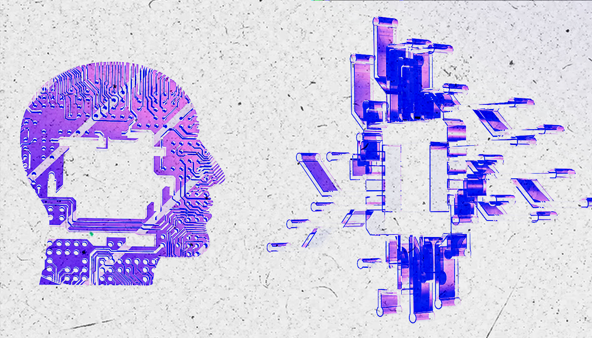
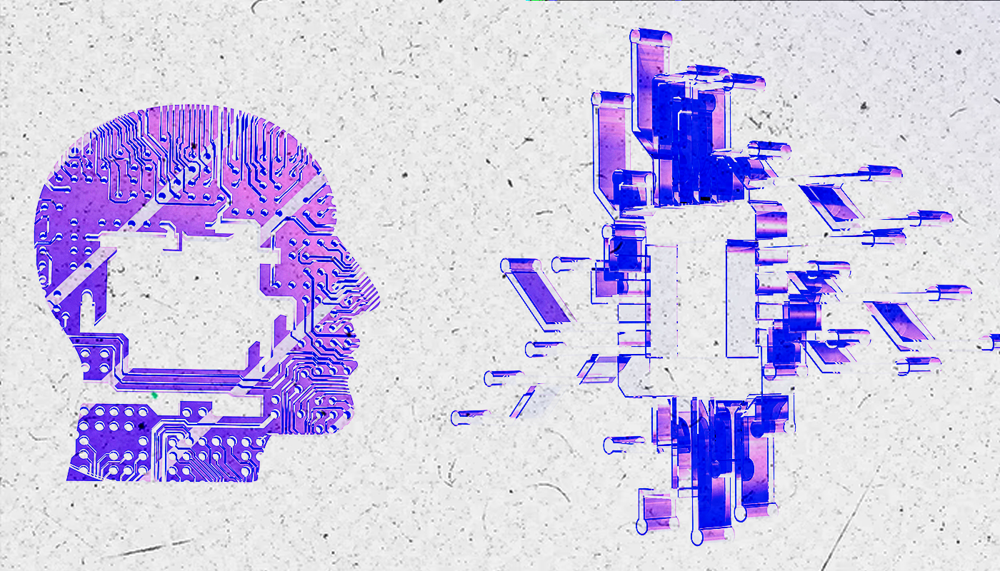

Vamos a comparar las tres principales IAs (ChatGPT, Gemini, Meta AI) en relación a su funcionamiento, orientación ideológica y aplicación en entornos educativos. Identificar los sesgos culturales, de género, geográficos y epistemológicos presentes en las respuestas de estas inteligencias artificiales. Analizar la interacción entre una docente real y una IA, explorando tensiones entre sus saberes pedagógicos para esto vamos a entrevistar varios docentes y la IA. Reflexionar sobre los riesgos de una educación deshumanizada, guiada por criterios algorítmicos que invisibilizan desigualdades estructurales y contextos locales. Producir un contenido audiovisual crítico y accesible que funcione como herramienta pedagógica para abrir debate en ámbitos educativos y sociales.
Motivación del grupo
La elección del tema surge de una inquietud actual: ¿cómo impactan los sistemas de inteligencia artificial en el ámbito educativo? Lejos de reducirse a una cuestión técnica, la presencia creciente de IA en las aulas nos obliga a repensar qué tipo de saber se legitima, quién lo produce y qué consecuencias trae su implementación acrítica.
Nos moviliza el deseo de generar herramientas de análisis para evitar la naturalización de estas tecnologías, reconociendo sus sesgos y los riesgos que implican en contextos atravesados por desigualdades estructurales. La necesidad de abordar esto desde una perspectiva crítica, situada y reflexiva es parte del compromiso formativo que propone esta materia.
 

El tema cuenta con abundante bibliografía actualizada y materiales accesibles que permiten abordarlo desde múltiples dimensiones: técnica, ética, política y pedagógica. Se trabajaron fuentes académicas, informes de organismos internacionales, documentales y artículos de divulgación que contribuyen a una comprensión plural y profunda del problema. Se realizó una exploración bibliográfica y audiovisual que incluyó: Artículos sobre sesgos algorítmicos en procesos educativos. Estudios de caso en plataformas como Turnitin, Moodle, Duolingo o sistemas de proctoring automatizado. Entrevistas a figuras como Safiya Noble, Joy Buolamwini y Kate Crawford, referentes en la crítica al determinismo tecnológico. Observaciones de IA en funcionamiento en entornos reales de aprendizaje.
¡¡¡NUESTRO INFORME!!!CLICK